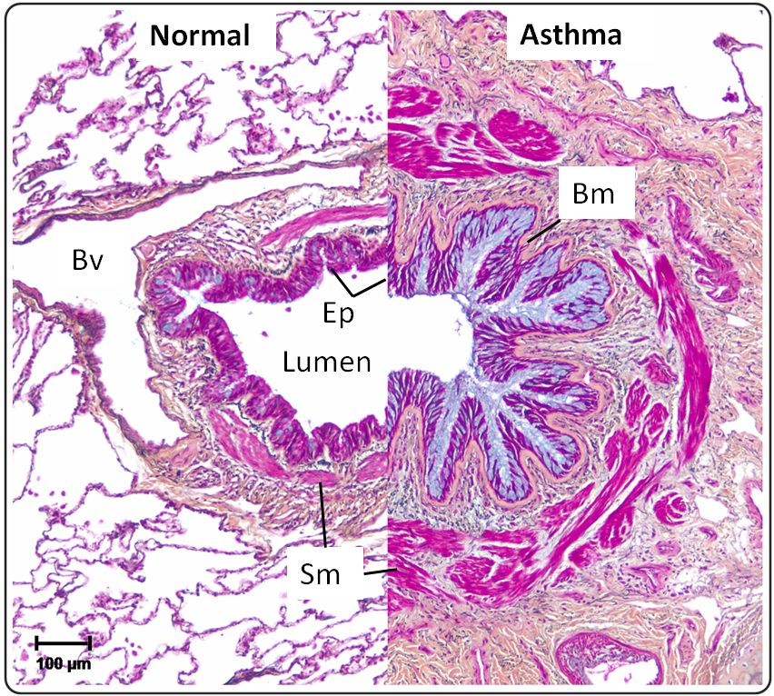

| Pulmonary Pathology,
Comparison to Normal |
|
|  | |
| The normal bronchus is on the left. Notice that in comparison, the specimen from a patient with asthma shows a growth of the height of the epithelial (Ep) layer. The basement membrane (Bm) in the asthmatic is thicker. The smooth muscle (Sm) shows hypertrophy and hyperplasia. (Bv) is a blood vessel. | |
| Samuel J. Wadsworth, S. Jasemine Yang and Delbert R. Dorscheid (2012). IL-13,
Asthma and Glycosylation in Airway Epithelial Repair, Carbohydrates - Comprehensive Studies on Glycobiology and Glycotechnology, Prof. Chuan-Fa Chang
(Ed.), InTech, DOI: 10.5772/51970. Available from:
|
|